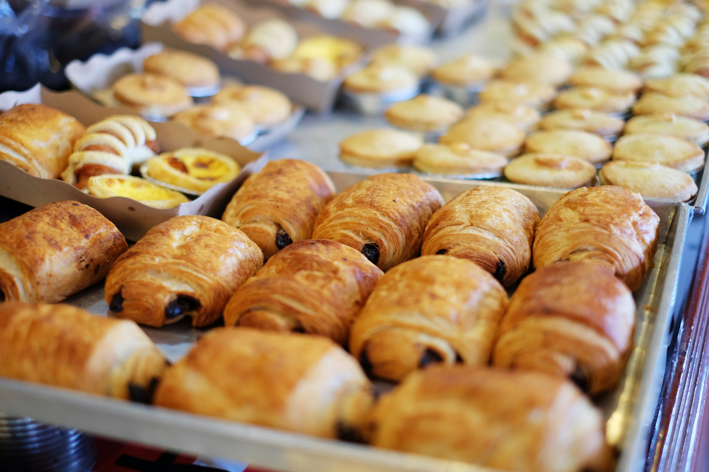
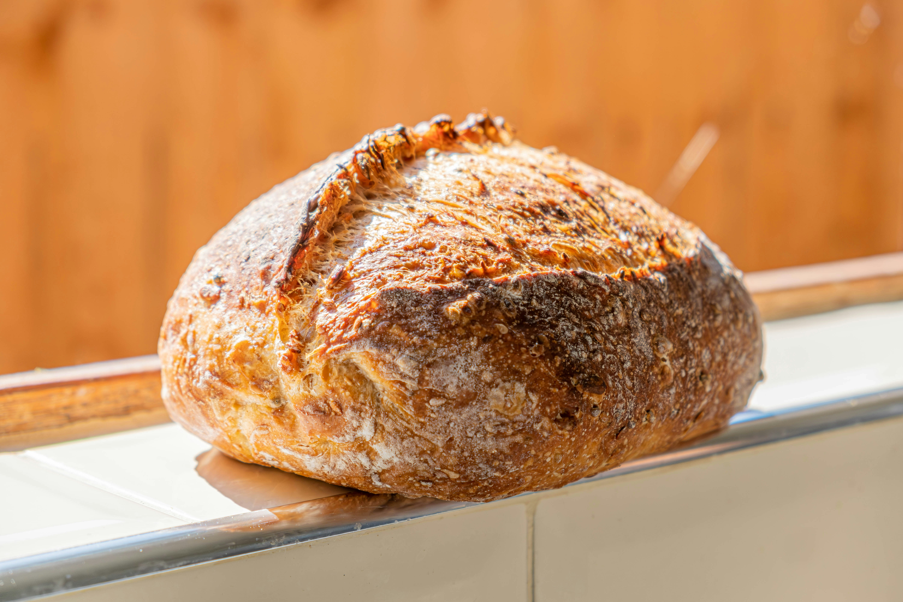
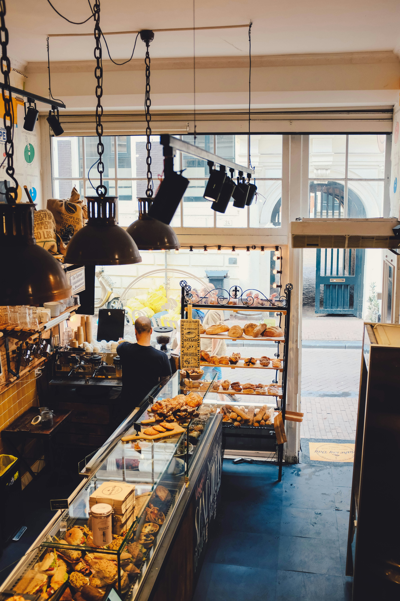
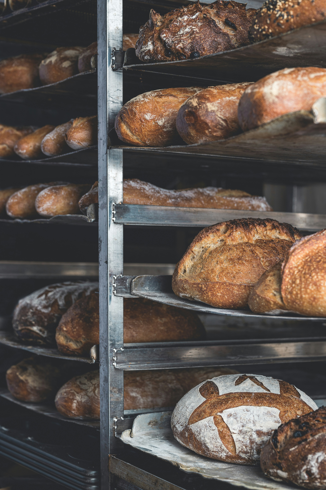
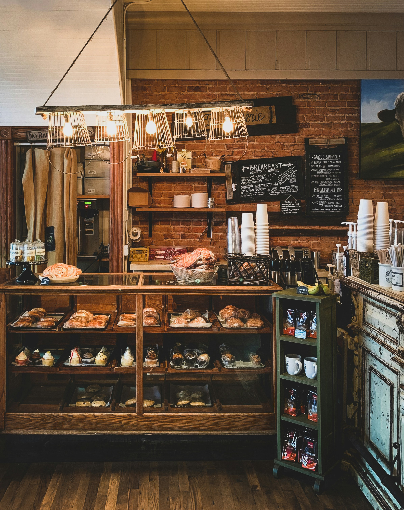

01
Bake Fresh.
We believe baked goods are best when they're fresh, so we prepare our products in small batches throughout the week.
From flakey pastries and artisan breads to custom cakes and cookies, Sweet Clover brings fresh-baked goodness to Maryville and the surrounding community.


Since 2019
Sweet Clover Bakery opened its doors in 2019 with a small menu, a big love for baking, and a goal of becoming a gathering place for the local community
Founder Emma Carter grew up baking with her grandmother and eventually turned that childhood tradition into a career. After studying culinary arts and working in several professional kitchens, Emma returned to northwest Missouri to open her own bakery
What started as a small neighborhood nakery has grown into a local destination for fresh pasteries, artisan breads, custom cakes, and seasonal desserts.
What guides us
01
We believe baked goods are best when they're fresh, so we prepare our products in small batches throughout the week.
02
We're proud to be part of the Maryville community and enjoy supporting local organizations, events, and customers.
03
A birthday, graduation, Friday morning, or Tuesday afternoon can be a reason to celebrate.
Around the bakery



